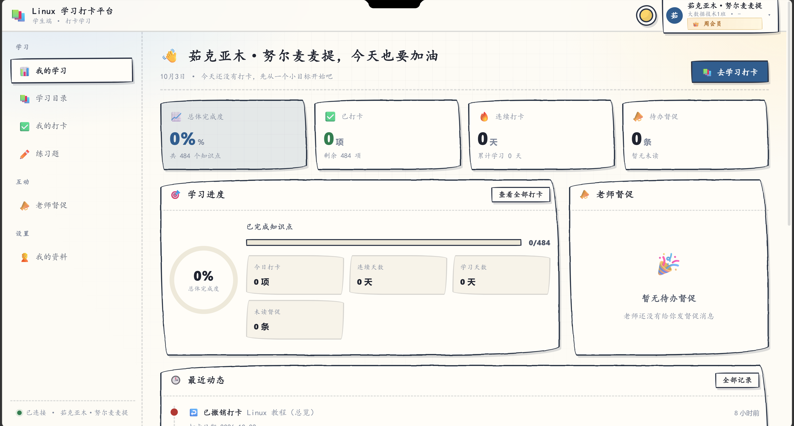
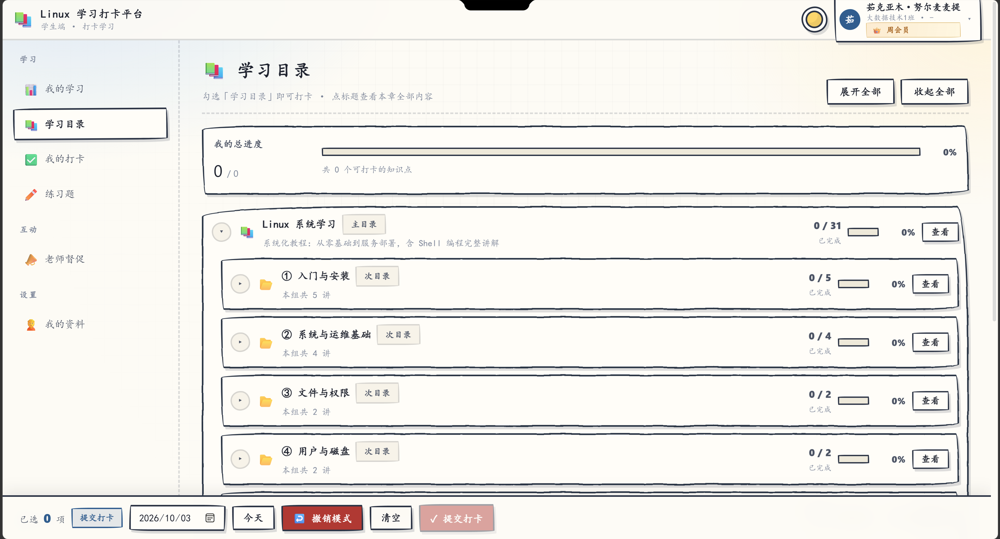
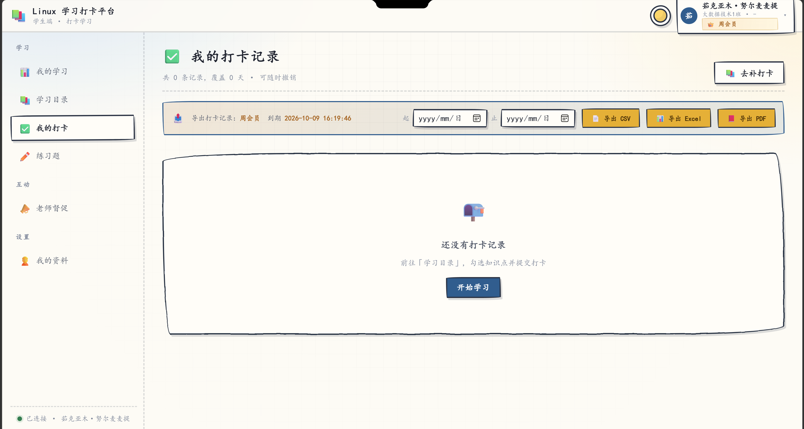
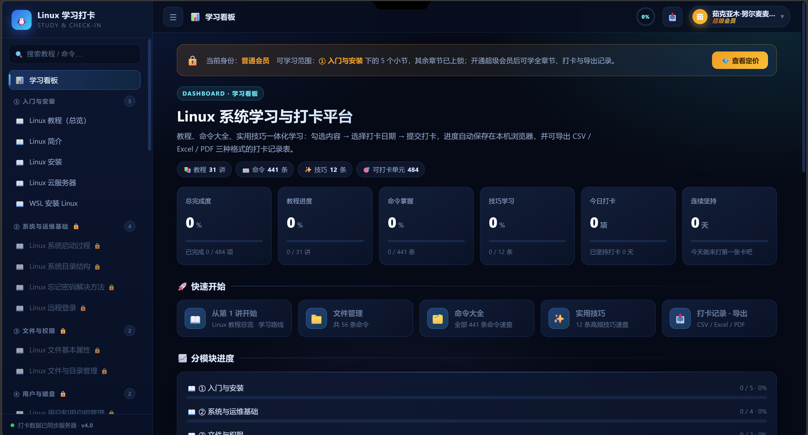
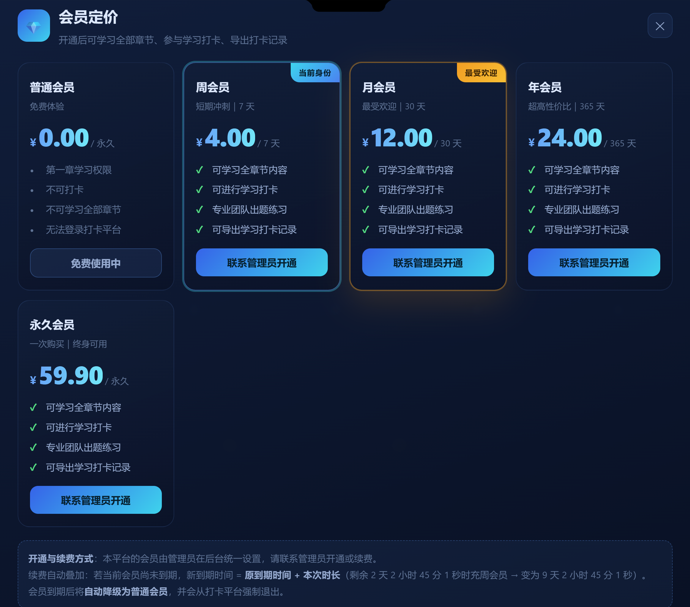
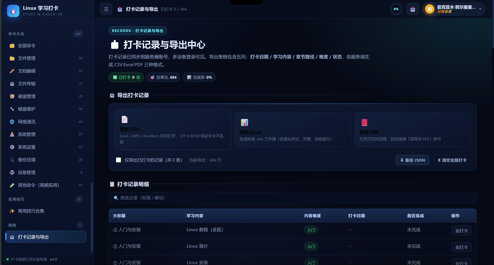
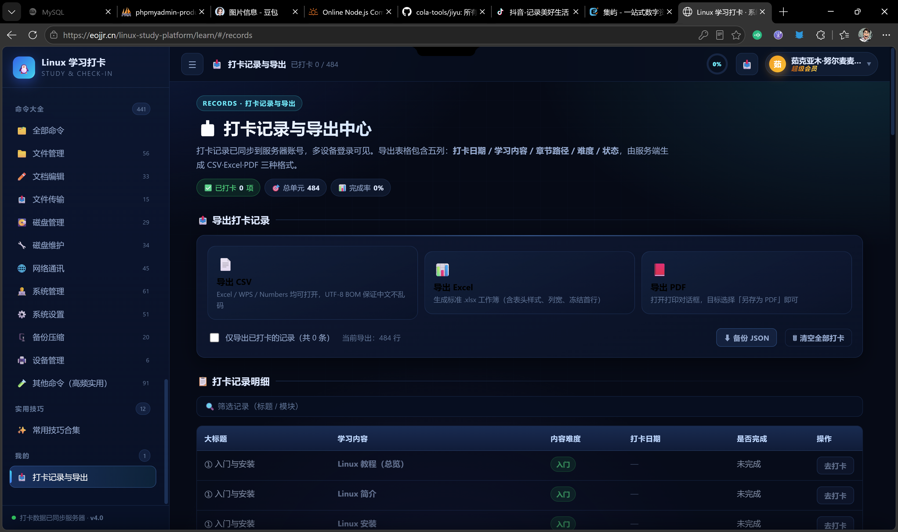
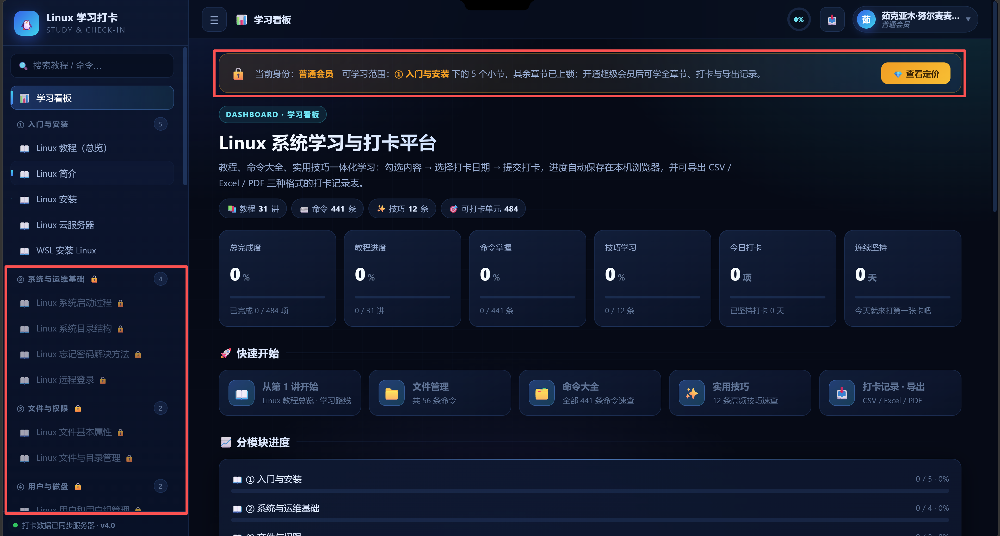
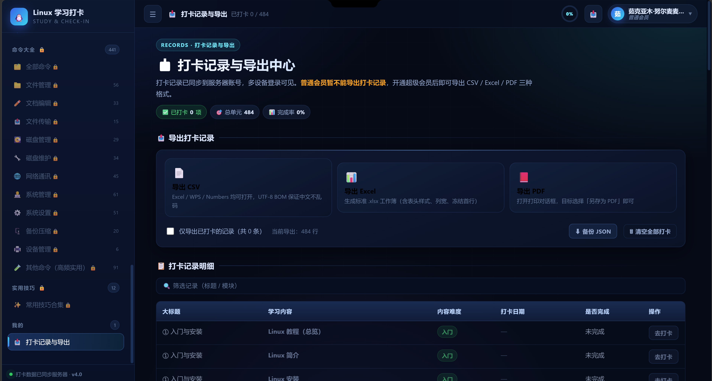

📌 模块一：平台手绘UI主题风格
清新手绘线条网页设计
双主题切换：浅色手绘 / 深色科技
整个Linux学习打卡平台采用手绘草图风格UI，所有卡片、边框都使用手写虚线轮廓，打破传统后台系统生硬的观感。 支持两套完整主题：浅色奶黄手绘版，适合日常学习；深色黑蓝科技版，夜间长时间阅读护眼。 学生登录后，首页仪表盘会展示个人学习数据，包含总体完成度、已打卡数量、连续打卡天数、待办督促消息。
注释：手绘风格全部前端CSS绘制，不需要额外图片素材，页面加载速度快，适配电脑、平板等设备。
引用：页面所有学习数据实时从后端MySQL数据库读取，每次打卡会自动更新统计卡片。

📌 模块二：学习目录模块
分章节Linux系统化教程
分层级知识点，自由勾选打卡
学习目录按照Linux学习路线划分多级目录，从入门安装、系统运维、文件权限、用户磁盘等章节依次排布。 每个章节展示完成进度百分比，学生可以勾选知识点，在页面底部选择打卡日期，一键提交打卡记录。 支持一键展开全部目录、收起全部目录，方便快速浏览全部484个可打卡知识点。
注释：所有知识点由管理员在后台维护，支持新增、修改、删除课程章节。
引用：提交打卡请求会发送到后端接口，数据存入MySQL，多设备登录可以同步学习记录。

📌 模块三：我的打卡记录
打卡历史管理与导出入口
筛选时间范围，支持CSV/Excel/PDF导出
打卡记录页面展示用户全部学习打卡历史，支持自定义起止日期筛选打卡记录。 会员用户可以将打卡记录导出为CSV、Excel、PDF三种格式，方便保存学习档案，提交作业或者复盘学习进度。 未打卡状态会引导用户前往学习目录开始学习打卡。
注释：普通会员不具备导出权限，需要升级会员解锁导出功能。
引用：导出文件由后端动态生成，导出内容包含打卡日期、学习章节、难度、完成状态等字段。
📌 模块四：浅色仪表盘总览
个人学习数据总看板
学习进度可视化统计
仪表盘是学生登录后的首页，集中展示全部学习核心指标：总体完成度、已打卡项、连续打卡天数、待办督促消息。 学习进度环形图直观展示484个知识点的完成比例，页面下方展示最近打卡动态记录，老师可以发送督促消息提醒学习。
注释：所有统计数据实时计算，提交打卡或者撤销打卡后页面会自动刷新数据。
引用：老师督促消息功能，由管理员后台向指定学生推送，消息会展示在待办督促卡片。

📌 模块五：深色主题学习看板
深色科技风学习首页
数据卡片 + 快速学习入口
深色版本的学习看板，黑蓝科技配色，夜间学习护眼。页面统计教程数量、命令数量、技巧数量，总打卡单元484个。 页面提供快速开始学习入口，支持跳转文件管理、命令大全、打卡导出页面，左侧侧边栏可以快速切换教程章节。
注释：深色主题和浅色主题共用一套后端数据，仅前端UI样式切换。
引用：左侧导航栏可以搜索教程、搜索Linux命令，快速定位知识点。

📌 模块六：会员定价体系
分级会员权限管理
普通/周会员/月会员/年会员/永久会员
平台设置多档位会员套餐，普通会员永久免费，仅开放第一章学习权限；周会员、月会员、年会员、永久会员解锁全部课程、打卡、导出记录功能。 会员开通由管理员后台手动开通，续费自动叠加时长，会员过期自动降级为普通会员。
注释：会员权限由后端鉴权控制，前端无法绕过权限直接访问付费功能。
引用：所有会员状态、到期时间保存在MySQL用户表，每次页面加载校验会员身份。

📌 模块七：打卡记录导出中心
多格式打卡数据导出
CSV / Excel / PDF 三种导出格式
打卡导出中心页面，支持导出全部打卡记录，支持备份JSON、清空打卡记录操作。 表格展示全部知识点明细，支持筛选模块标题，每条知识点可以直接跳转打卡页面。
注释：清空打卡记录会删除服务器上该用户全部打卡数据，操作需要谨慎。
引用：导出文件UTF-8编码，Excel、WPS打开中文不会乱码。

📌 模块八：教程阅读页面
在线Linux教程阅读
分章节图文教程，知识点打卡勾选
教程阅读页面展示Linux课程正文内容，支持阅读知识点，页面上方展示课程难度、阅读时长。 付费会员可以勾选「我已学完本讲」提交打卡，普通会员只能阅读免费章节，无法打卡付费章节。
注释：教程内容支持富文本、代码块渲染，适合展示Linux命令示例。
引用：课程内容全部由管理员后台编辑维护。

📌 模块九：侧边课程导航目录
左侧固定导航栏
快速切换全部章节知识点
页面左侧是固定侧边导航，按章节分组展示全部课程，每个章节右上角标注小节数量。 点击目录条目可以直接跳转对应教程页面，未解锁章节会增加锁图标提示需要会员。
注释：导航栏会根据当前阅读章节自动高亮当前位置。
引用：导航菜单动态从后端接口拉取课程目录数据。

📌 模块十：普通会员权限限制
会员权限隔离提示
未开通会员会限制导出功能
普通会员访问打卡导出页面，会弹出权限提示：普通会员暂不能导出打卡记录，开通会员后解锁CSV、Excel、PDF导出。 所有权限校验后端执行，前端仅做提示，无法绕过权限直接下载文件。
注释：权限校验放在后端，就算修改前端代码，也无法调用导出接口。
引用：所有付费功能接口都需要校验用户会员身份Token。
📞 联系管理员
多渠道联系入口
扫码关注，开通会员、咨询问题
📧 邮箱：2171156701@qq.com
📍线下地址：新疆昌吉回族自治州昌吉市文化东路29号新疆农业职业技术大学